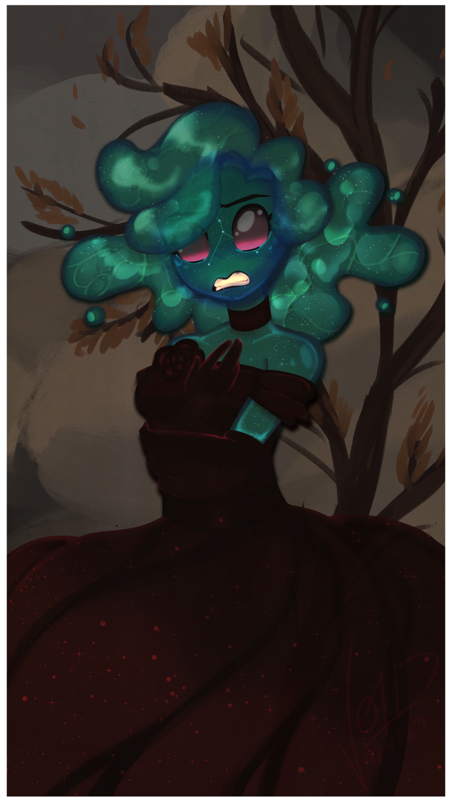
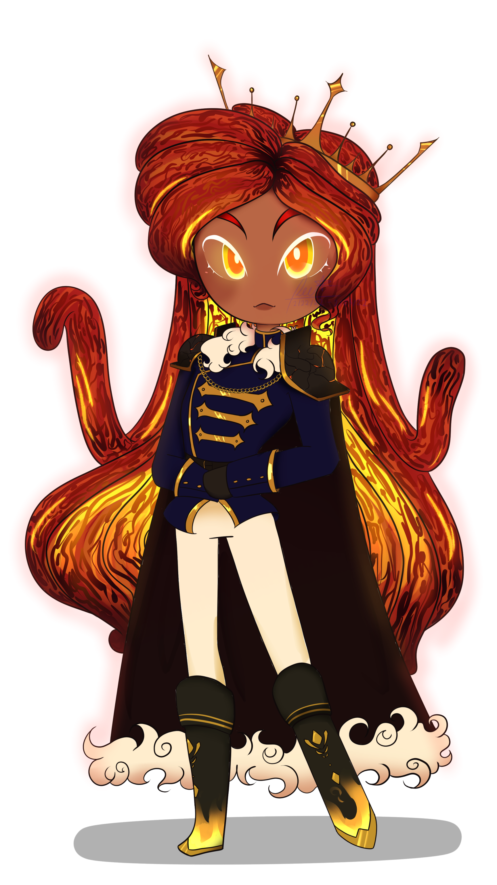
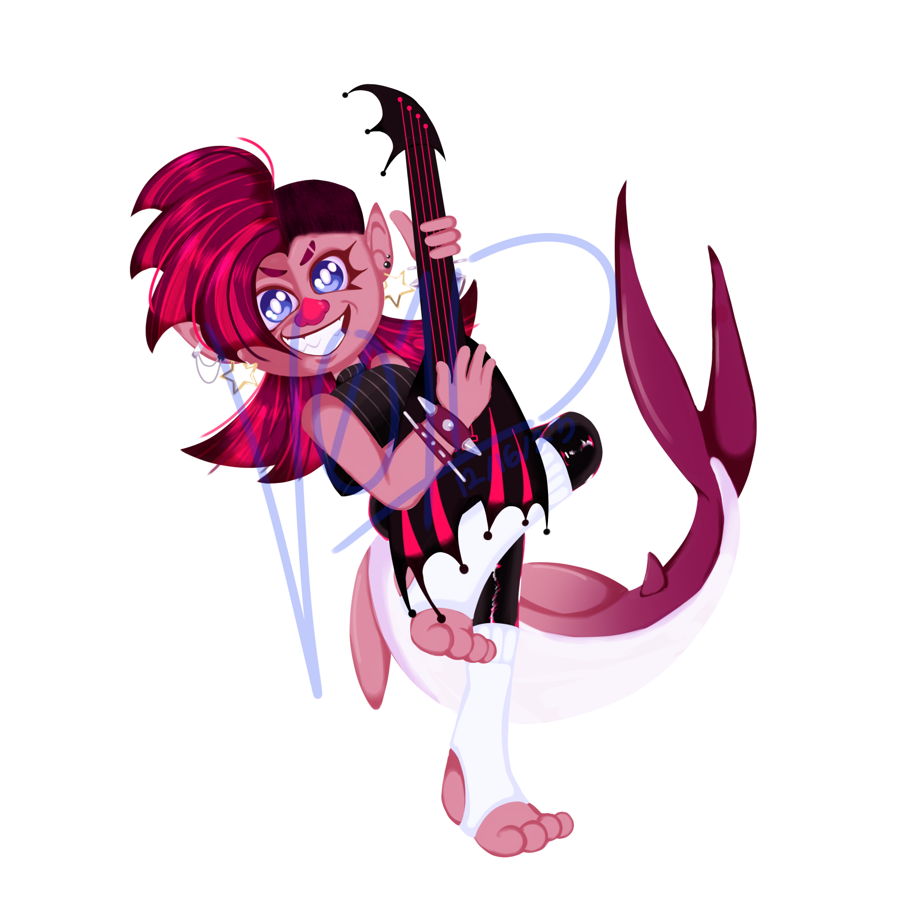
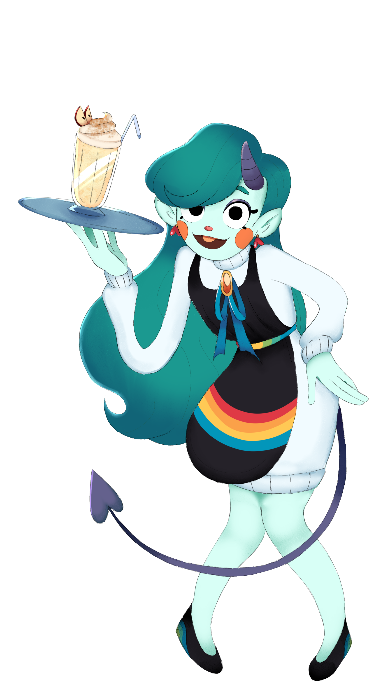
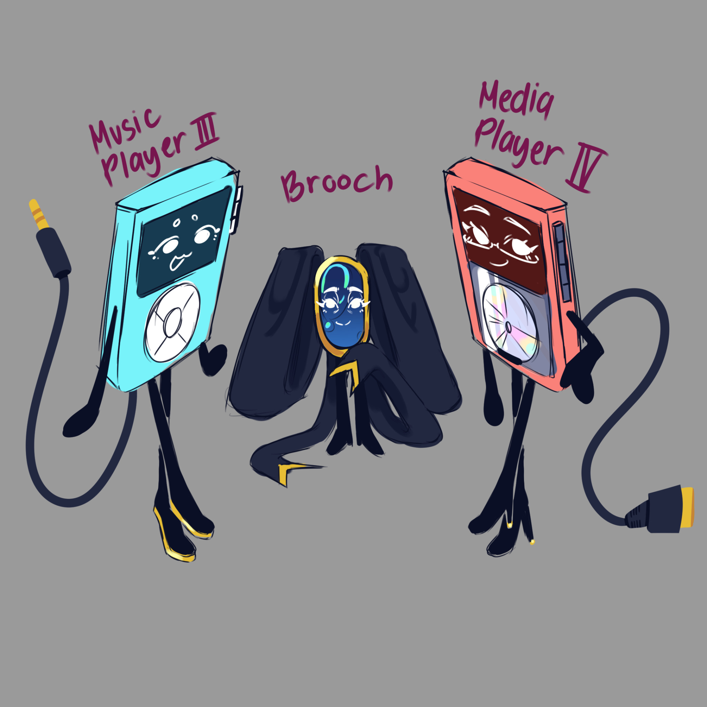
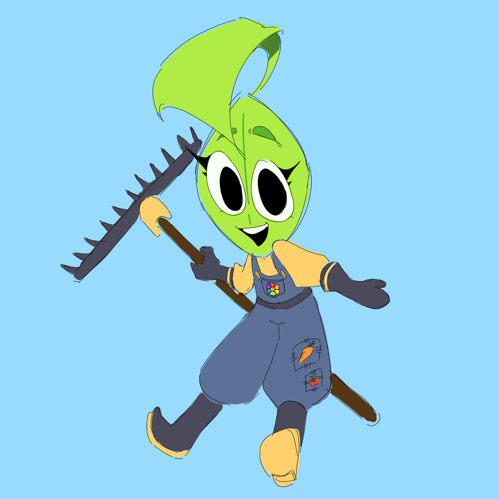

Ei
I Started Making ocs when I was 7 (Mostly lost media since I can't remember any of them and it's when I had a Sonic Phase). The Oldest Oc I had was from 2013 which is an mp3 player. The Ocs I make ended up being a reflection of myself either in a realistic sense or who I wanted to be. Some are either rich and competent or ocs that feels like me but with longer hair and looking cool. My inspiration in terms of character designs seems to fall onto some royal category, looking regal and have the cravat and the dresses but that's just me dreaming and now projecting those desires to my characters





